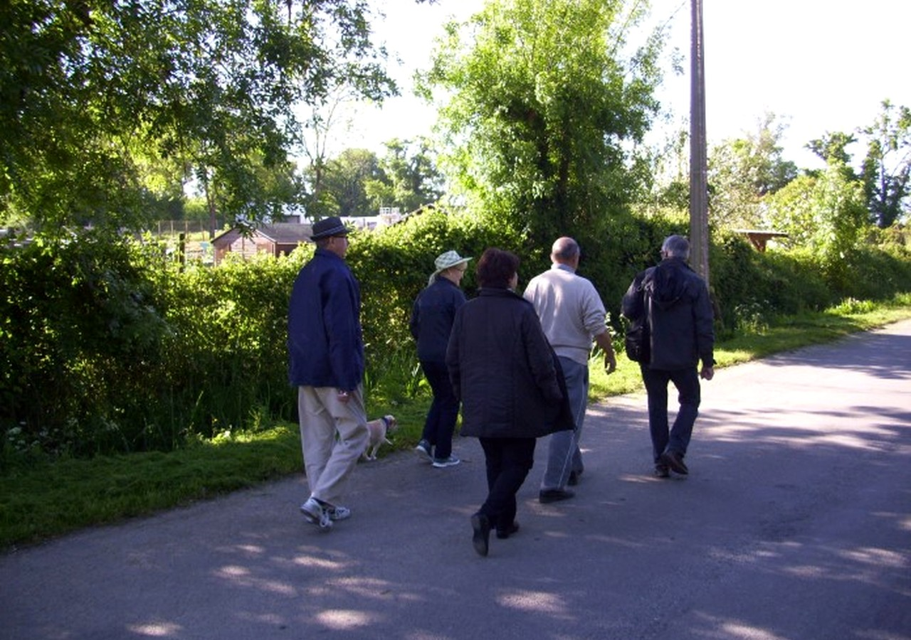

Rompre l’isolement
Rencontrez d’autres personnes qui vivent des situations proches de la vôtre, dans un cadre bienveillant.
Association locale à Libourne
Rejoignez une association qui vous aide à mieux vivre avec votre respiration.

Présentation
Association accompagnant les personnes en insuffisance respiratoire ou atteintes de maladies chroniques.
Aider chacun à retrouver confiance, mouvement et sérénité grâce à une pratique physique adaptée et à la force du collectif.
Des activités douces, encadrées et conviviales, dans une ambiance simple, claire et rassurante.
Les bénéfices
Des gestes simples, réguliers et adaptés pour mieux vivre au quotidien.
Rencontrez d’autres personnes qui vivent des situations proches de la vôtre, dans un cadre bienveillant.
Bouger régulièrement aide à mieux respirer, à reprendre confiance et à se sentir plus autonome.
Chaque activité est pensée pour respecter votre rythme, votre souffle et votre niveau de fatigue.
Un rythme respecté
Chez ORA, personne ne vous demande d’aller trop vite. L’important est de bouger, respirer et progresser pas à pas, entouré d’un groupe attentif.
Voir pour qui
La vie de l’association
Les photos des flyers montrent les marches, les activités adaptées et les sorties conviviales organisées par ORA.



Passer à l’action
Découvrez des activités simples et encadrées pour reprendre confiance et mieux respirer au quotidien.
Documents utiles
Les documents de l’association restent accessibles en PDF, dans une présentation plus simple et plus directe.